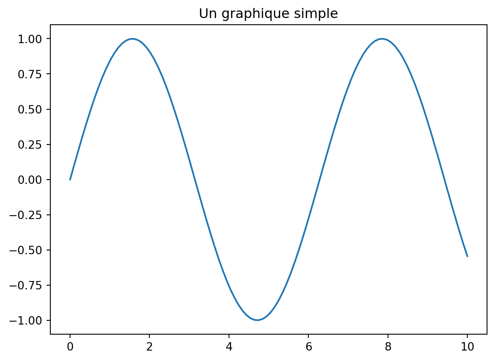

Code
# nombres (operations usuelles)
(1.0+(2.0+3.0*(4.0+5.0)))/301.0Cycles et fluctuations - AE2E6
Si vous n’avez jamais utilisé Python, on recommande de suivre l’introduction de Quantecon. Sinon, voici un bref rappel des bases de Python.
# nombres (operations usuelles)
(1.0+(2.0+3.0*(4.0+5.0)))/301.0# les puissances s'ecrivent avec **
2**8256# affectation de variable
x = 10# Les noms de variables peuvent contenir des caracteres Unicode
# Python 3 prend en charge les noms de variables Unicode
a = 20
σ = 34
ϵ = 1e-4# comparaison
2 == 3False3 <= 3True# Les chaines peuvent aussi contenir des caracteres Unicode
fancy_str = "α est une chaine" # les guillemets simples ou doubles fonctionnent
'c' 'c'# interpolation de chaines (f-strings)
he_who_must_not_be_named = "Voldemort"
f"Bienvenue {he_who_must_not_be_named}!" 'Bienvenue Voldemort!'# interpolation de chaines
n = 1999999
print(f"Iteration {n} toujours en cours...")Iteration 1999999 toujours en cours...import numpy as np# listes Python (conteneurs generiques)
v_list = [1, 2, 3]# tableaux NumPy (vecteurs/matrices)
v = np.array([1, 2, 3])
varray([1, 2, 3])# matrices
M = np.array([[1, 2, 3], [4, 5, 6], [7, 8, 9]])
Marray([[1, 2, 3],
[4, 5, 6],
[7, 8, 9]])# multiplication matricielle
M @ varray([14, 32, 50])# les listes sont mutables
x = ["One"]
x.append("Two")
x.append("Three")
x.append("Four")
x.append("Five")
x['One', 'Two', 'Three', 'Four', 'Five']# acces aux elements d'un vecteur (indexation a partir de 0)
v[0]np.int64(1)# acces aux elements d'une matrice
M[0, 1]np.int64(2)En Python, l’indexation commence a 0. Le premier element d’une collection est note 0.
# decouper des matrices (slicing)
print(M)
# garder la premiere ligne
print("Premiere ligne")
print(M[0, :])
# garder la deuxieme colonne
print("Deuxieme colonne")
print(M[:, 1])
# extraire une sous-matrice
print(M[0:2, 0:2])[[1 2 3]
[4 5 6]
[7 8 9]]
Premiere ligne
[1 2 3]
Deuxieme colonne
[2 5 8]
[[1 2]
[4 5]]# concatener des vecteurs (sequence)
np.concatenate(([1, 2], [3, 4]))array([1, 2, 3, 4])# concatener des vecteurs (empilement horizontal)
np.hstack(([1, 2], [3, 4]))array([1, 2, 3, 4])# transposer une matrice
np.array([[1, 2], [3, 4]]).Tarray([[1, 3],
[2, 4]])# les tuples peuvent contenir des donnees heterogenes
t = ("This", "is", 1, "tuple")# acces aux elements d'un tuple (indexation a partir de 0)
t[2]1# les tuples sont immuables
# Le code suivant doit lever une exception
try:
t[0] = "That"
except Exception as e:
print(e)'tuple' object does not support item assignment# boucle sur n'importe quel iterable
for i in range(1, 6): # de 1 a 5 (6 est exclu)
print(f"Iteration {i}")Iteration 1
Iteration 2
Iteration 3
Iteration 4
Iteration 5def f(x):
return x**2
f(10)100import matplotlib.pyplot as plt
# %matplotlib inline
# (pas strictement necessaire dans les notebooks modernes mais utile pour la compatibilite)x = np.linspace(0, 10, 100)
y = np.sin(x)
plt.plot(x, y)
plt.title("Un graphique simple")
plt.show()
Considerons le processus VAR(1) suivant :
\[ y_t = A y_{t-1} + B \epsilon_t \]
ou \(\epsilon_t \sim \mathcal{N}(0, \Sigma)\).
On suppose : \[ A = \begin{pmatrix} 0.8 & 0.1 \\ 0.01 & 0.6 \end{pmatrix} \] \[ B = \begin{pmatrix} 1 & 0 \\ 0 & 1 \end{pmatrix} \] \[\Sigma = \begin{pmatrix} 1 & 0.5 \\ 0.5 & 1 \end{pmatrix} \]
# TODO# TODO# TODOCalculer la reponse de \(y_t\) a un choc \(\epsilon_0 = [1, 0]'\) (et \(\epsilon_t = 0\) pour \(t > 0\)). Faire un graphique de la reponse de \(y_1\) et \(y_2\) au choc initial.
# TODOImporter scipy.stats et trouver comment faire des tirages dans une loi normale multivariée.
# TODOPour simuler la trajectoire stochastique, vous pouvez utiliser la fonction suivante.
def simulate(A, B, Sigma, e0=None, T=20):
"""
Simule une trajectoire de y_t = A y_{t-1} + B e_t avec e_t ~ N(0, Sigma).
Arguments:
- A, B: matrices du processus VAR(1)
- Sigma: matrice de covariance des chocs
- e0: choc initial (vecteur de taille n), si None alors e0 = 0
- T: nombre de periodes a simuler
Retour:
- sim: tableau de taille (n, T+1) contenant la trajectoire simulee de y_t, avec sim[:, 0] = B @ e0
"""
n = A.shape[0]
if e0 is None:
e0 = np.zeros(n)
dist = multivariate_normal(mean=np.zeros(n), cov=Sigma)
sim = []
y_curr = B @ e0
sim.append(y_curr)
for t in range(T):
e_t = dist.rvs()
y_next = A @ y_curr + B @ e_t
sim.append(y_next)
y_curr = y_next
return np.array(sim).T # Renvoie un tableau de taille (n_vars, T+1)# TODO# TODOLa matrice de covariance \(\Omega\) verifie \(\Omega = A \Omega A' + B \Sigma B'\). Resoudre cette équation en appliquant l’itération \(\Omega_n = A \Omega_{n-1} A' + B \Sigma B'\)
# TODO# TODOOn peut considérer la matrice:
\[ A = \begin{pmatrix} \rho & 0.1 \\ 0.0 & 0.6 \end{pmatrix} \]
pour différentes valeurs de \(\rho\) (0.8, 1.0, 1.2) et refaire les simulations stochastiques.
On a vu dans le cours que les modèles DSGE peuvent être linéarisés autour d’un point d’équilibre pour obtenir un système dynamique du second ordre :
\[A \mathbb{E}[ y_{t+1} ] + B y_t + C y_{t-1} + D \epsilon_t = 0\]
où A,B,C sont des matrices de taille (n, n), D une matrice de taille (n, m) et \(\epsilon_t\) un vecteur de chocs exogènes normalement distribué de moyenne nulle et de covariance \(\Sigma\), une matrice de taille (m, m).
On cherche des solutions linéaires de la forme \(y_t = X y_{t-1} + Y \epsilon_t\).
# TODOL’algorithme d’itération temporelle consiste à itérer la fonction \(X_{n+1}=T(X_n)\) où \(X_{n+1}\) satisfait \[A X_n X_{n+1} + B X_{n+1} + C = 0\].
# TODO# TODOLa fonction suivante calcule la solution du système matriciel du second ordre en utilisant la méthode de Schur généralisée (QZ).
Cette méthode est plus robuste que l’iteration temporelle et permet d’analyser l’ensemble des valeurs propres du système pour vérifier les conditions de stabilité.
import numpy as np
from scipy.linalg import ordqz
def solve_second_order_qz(A, B, C, D, tol=1e-10, return_eigvals=False):
"""
Résout AX^2 + BX + C = 0 (branche stable) puis Y via (AX+B)Y + D = 0.
Retourne:
X, Y, eigvals, diagnostics
"""
A = np.asarray(A, dtype=float)
B = np.asarray(B, dtype=float)
C = np.asarray(C, dtype=float)
D = np.asarray(D, dtype=float)
n = A.shape[0]
I = np.eye(n)
Z = np.zeros((n, n))
# Companion pencil pour P(lambda)=A lambda^2 + B lambda + C
M = np.block([[Z, I], [-C, -B]])
N = np.block([[I, Z], [Z, A]])
S, T, alpha, beta, Q, Zqz = ordqz(M, N, sort="iuc")
eigvals = (alpha / beta)
eigvals.sort()
if return_eigvals:
return eigvals
n_stable = np.sum(np.abs(eigvals) < 1 - tol)
if n_stable != n:
raise ValueError(
f"Nombre de racines stables = {n_stable}, attendu = {n}."
)
U = Zqz[:, :n]
U1 = U[:n, :]
U2 = U[n:, :]
if np.linalg.cond(U1) > 1 / np.sqrt(np.finfo(float).eps):
raise ValueError("U1 est mal conditionnée : solution numérique instable.")
X = np.real_if_close(U2 @ np.linalg.inv(U1))
G = A @ X + B
Y = np.linalg.solve(-G, D)
# Diagnostics de cohérence
res_X = np.linalg.norm(A @ X @ X + B @ X + C, ord=np.inf)
res_Y = np.linalg.norm((A @ X + B) @ Y + D, ord=np.inf)
diagnostics = {
"eigvals": eigvals,
"n_stable": int(n_stable),
"residual_X": float(res_X),
"residual_Y": float(res_Y),
}
return X, Y, eigvals, diagnostics# TODO# TODO